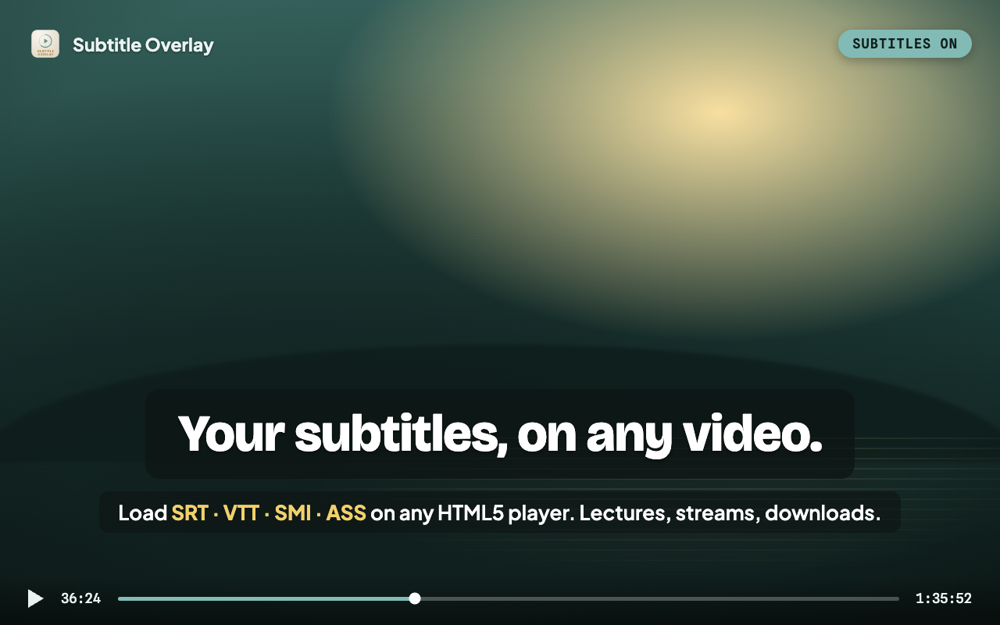
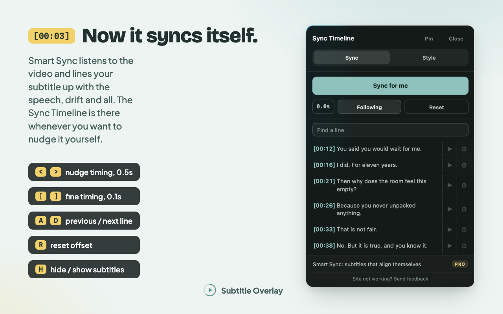

영상에 내 언어로 된 자막이 없어 자막 파일을 찾았습니다. 그런데 자막이 20초 어긋납니다. 시간을 맞춰도 3분 뒤에는 다시 밀립니다. Subtitle Overlay는 이런 문제를 해결하기 위해 만들었습니다.

주요 기능
내 자막 파일을 영상에 바로
SRT, VTT, SMI, ASS 파일을 페이지에 끌어 놓으세요. 영상을 보면서 OpenSubtitles에서 자막을 검색할 수도 있습니다. 문자 인코딩을 자동으로 감지해 한국어·일본어·중국어 자막이 깨지지 않도록 합니다.
영상에 맞춰 읽기 편하게
영상이 재생되는 동안 글꼴, 크기, 색상, 외곽선, 배경 흐림, 위치를 바꿀 수 있습니다. 전체 화면에서도 조절할 수 있습니다. 자막 크기는 화면에 맞춰 바뀌므로 작은 창부터 4K 화면까지 같은 설정을 쓸 수 있습니다.
자막 시간을 직접 조절
Sync Timeline에서 모든 자막 줄을 볼 수 있습니다. 원하는 장면으로 이동하거나, 자막 한 줄을 현재 재생 시점에 맞출 수 있습니다. 별도 창을 열지 않고 단축키로 자막 시간을 조금씩 조절할 수도 있습니다.
다시 열면 이어서
같은 영상을 다시 열면 클릭 한 번으로 마지막 자막과 시간 설정을 복원할 수 있습니다. 복원 정보는 단방향 해시를 기준으로 기기에 저장하며 업로드하지 않습니다.
Smart Sync
대사가 나오는 구간에서 Smart Sync를 시작하세요. 자막이 일정하게 어긋나면 시간 차이를 보정할 값을 찾습니다. 흔히 생기는 프레임 레이트 차이로 자막이 점점 밀릴 때도 보정값을 찾습니다. 보정 결과를 무료로 5회 적용해 볼 수 있습니다. 실패한 시도와 거절한 제안은 횟수에 포함하지 않습니다. 방금 적용한 결과를 Undo로 되돌리면 사용 횟수도 복구됩니다.
자막을 불러온 뒤 Chrome 음성 팩을 선택해서 다운로드할 수 있습니다. 음성과 자막의 언어가 같으면 음성 팩으로 더 빠르게 시간을 맞출 수 있습니다. 자막 언어를 알 수 있으면 자동으로 선택합니다. 음성 팩이 없거나 번역 자막을 쓰는 경우에도 음성이 나오는 구간을 비교하는 방식은 사용할 수 있습니다.
오디오는 내 기기에서 처리합니다. Smart Sync는 사용자가 시작할 때만 실행합니다. 결과는 영상과 자막 파일에 따라 달라지며, 일부 플레이어에서는 오디오를 공유할 수 없습니다. 제안된 보정값을 적용해 볼 수 있습니다. 방금 적용한 결과는 되돌릴 수 있습니다.

기기 밖으로 보내는 정보
기기 밖으로 보내는 정보는 적습니다. 어떤 경우에 무엇을 보내는지 안내합니다.
- 자막 본문, 영상, 오디오, 스크린샷, 전체 페이지 URL은 보내지 않습니다.
- 자막을 검색하면 OpenSubtitles에 검색어를 보냅니다. OpenSubtitles는 검색 결과로 자막 파일을 반환합니다.
- 기능을 설정할 때 음성 활동 감지 모델은 GitHub Pages에서 받습니다. 선택 사항인 음성 팩은 Chrome에서 받습니다.
- Pro를 활성화할 때 Gumroad에서 라이선스 키를 검증합니다.
- 사용 통계는 선택 사항입니다. Chrome에서는 기본으로 켜져 있으며, Safari에서는 먼저 동의를 요청합니다. 언제든 설정에서 끌 수 있습니다. 네트워크 서비스는 IP 주소를 받습니다. 사용 통계에서 대략적인 위치를 추정할 수 있으므로 완전히 익명인 정보는 아닙니다.
각 항목의 자세한 내용은 개인정보 처리방침에서 확인하세요.
Subtitle Overlay Pro
Pro는 Smart Sync 무료 체험 횟수 제한을 없앱니다. 설치별 OpenSubtitles 다운로드 한도도 24시간 동안 30회에서 최대 300회로 늘립니다. 실제 한도는 공유 서비스의 허용량에 따라 달라집니다. 자막 검색, 로컬 파일 불러오기, 모양 조절, 수동 시간 조절은 계속 무료입니다.
Auto Captions, AI Translate, 더 큰 자막 라이브러리, A–B 반복, 사전 기능은 계획 중입니다. 아직 사용할 수 없으며 출시일도 정해지지 않았습니다.
$3.99 월간 구독 또는 연간 $23.99. 언제든 해지할 수 있으며, 결제한 기간이 끝날 때까지 Pro를 사용할 수 있습니다.
Founding Lifetime은 $34.99를 한 번 결제하는 평생 라이선스입니다. 50개 한정으로, 2026년 12월 31일(KST)까지 판매합니다. 그 전에 모두 팔리면 판매를 마칩니다. 구매자는 평생 이용 권한을 유지하며, 새 Pro 기능이 출시되면 사용할 수 있습니다.
구매 후 Gumroad 영수증이나 라이브러리에서 라이선스 키를 복사하세요. 확장 프로그램의 Pro 탭을 여세요. Activate를 선택하세요.
자주 묻는 질문
- 어떤 영상에서 사용할 수 있나요?
- 페이지에 HTML5 video 요소가 있으면 사용할 수 있습니다. 대부분의 스트리밍 사이트, 강의 플랫폼, 브라우저에서 연 로컬 파일이 이에 해당합니다.
- 어떤 자막 형식을 지원하나요?
- SRT, VTT, SMI, ASS를 지원합니다.
- 자막과 음성의 언어가 같아야 하나요?
- 음성이 나오는 구간을 비교하는 방식은 번역 자막에서도 작동할 수 있습니다. 선택 사항인 더 빠른 음성 인식 방식은 발화 내용과 자막 본문을 비교하므로 언어가 같아야 합니다. 결과는 영상과 파일에 따라 달라집니다.
- 자막이나 영상이 업로드되나요?
- 자막 본문, 영상, 오디오는 기기 밖으로 보내지 않습니다.
- 무료인가요?
- 자막 불러오기, 검색, 모양 조절, 수동 시간 조절은 무료입니다. Smart Sync 결과를 무료로 5회 적용해 볼 수 있습니다. Pro는 체험 횟수 제한을 없앱니다. Undo로 되돌리면 체험 횟수도 복구됩니다.